STAR 华人足球俱乐部创建于 2002 年，前身为浙江华人足球队，由终身名誉队长 Lemon（9号）创立。后来与狮城华人论坛队合并，并更名为 STAR FC。在 2008 年，STAR 的队徽进行了改动，红色代表着流淌的血液，两颗星象征着 “STAR” 的含义，其中的巨龙寓意着龙的传人，时刻警醒着我们这些漂泊在外的炎黄子孙。
经过风雨二十载，虽然球队也曾面临了人员流动和困难时期，但凭借球队成员之间的深厚情谊和传帮带精神，STAR FC 始终渡过难关，并不断发展壮大。在老队员的引领下，新队员们也能迅速融入球队，在异国他乡立人立业。
球队自创立以来，一直以团结、分享和乐趣为核心价值观，将来自不同领域、不同年代的朋友们聚集在一起，共同追求足球这一共同信仰。二十多年来，我们一直秉持着这种足球文化，一起踢球、一起开心、一起成长！
2022 是 STAR FC 成立的第二十个年头。2023，故事还在继续，期待下一个十年……
#新加坡 #新加坡业余足球 #热爱足球 #新加坡生活 #新加坡留学生 体育达人成长计划 #我的运动日常 小红书竞技场 #藏不住了我是球迷
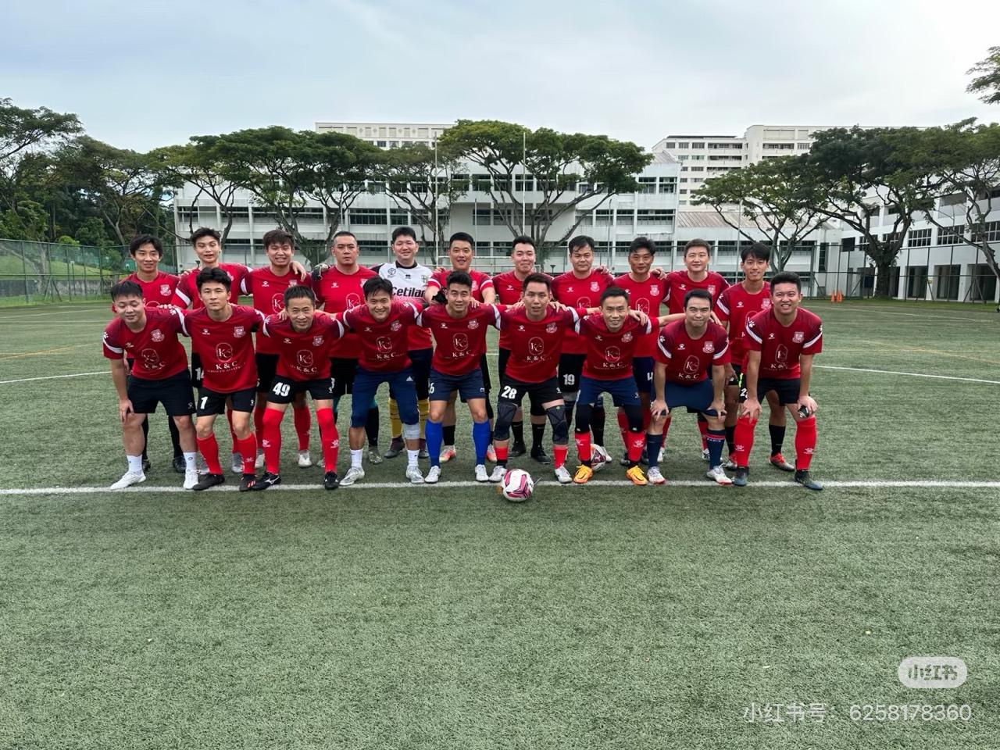
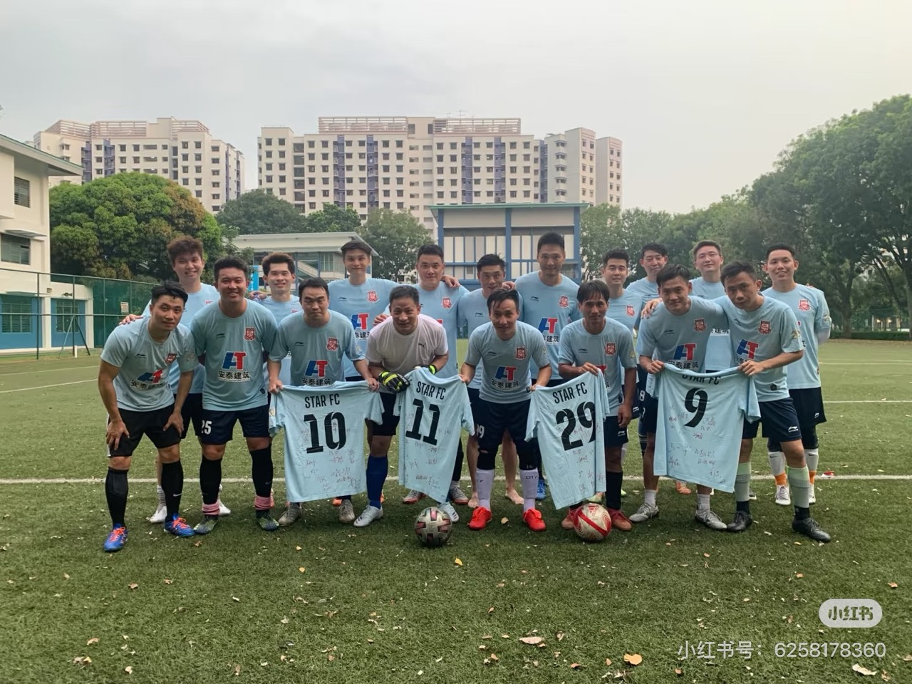
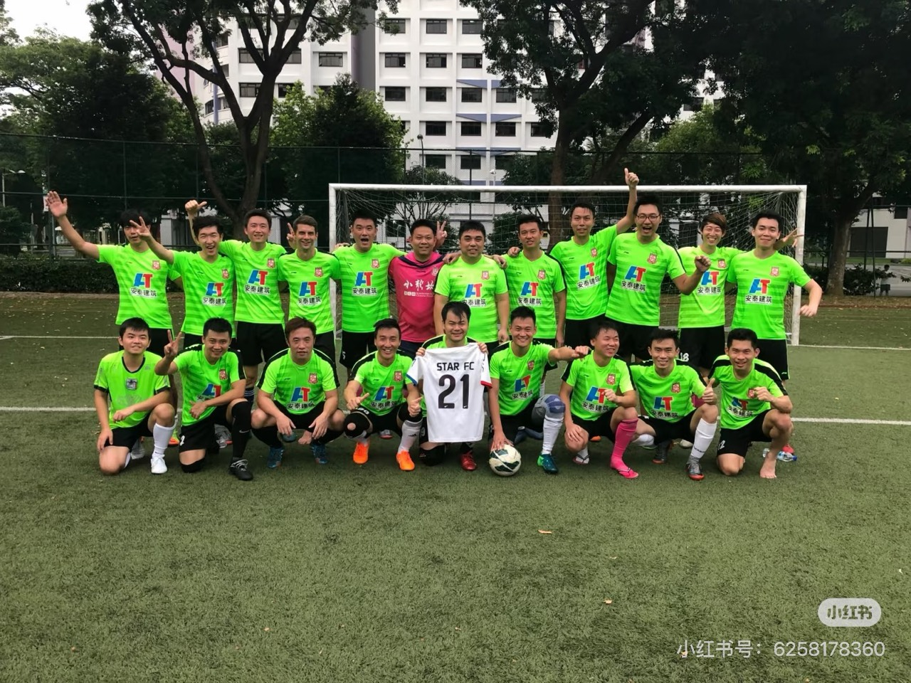
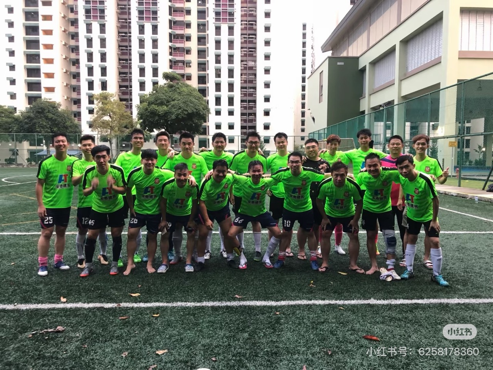
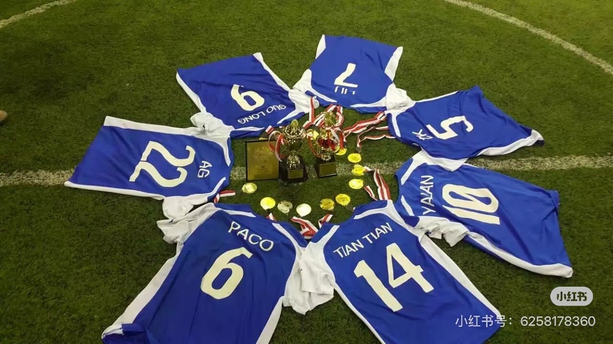
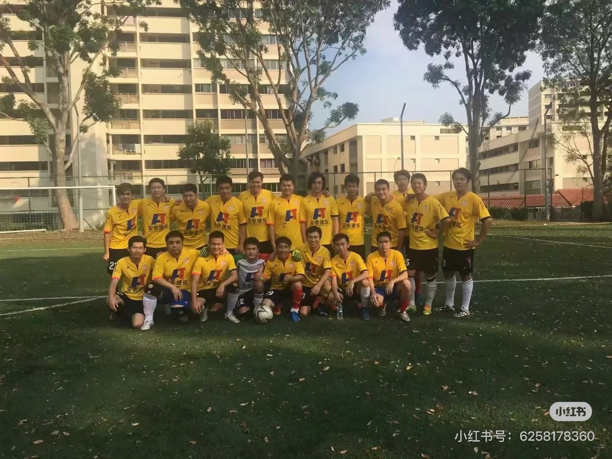
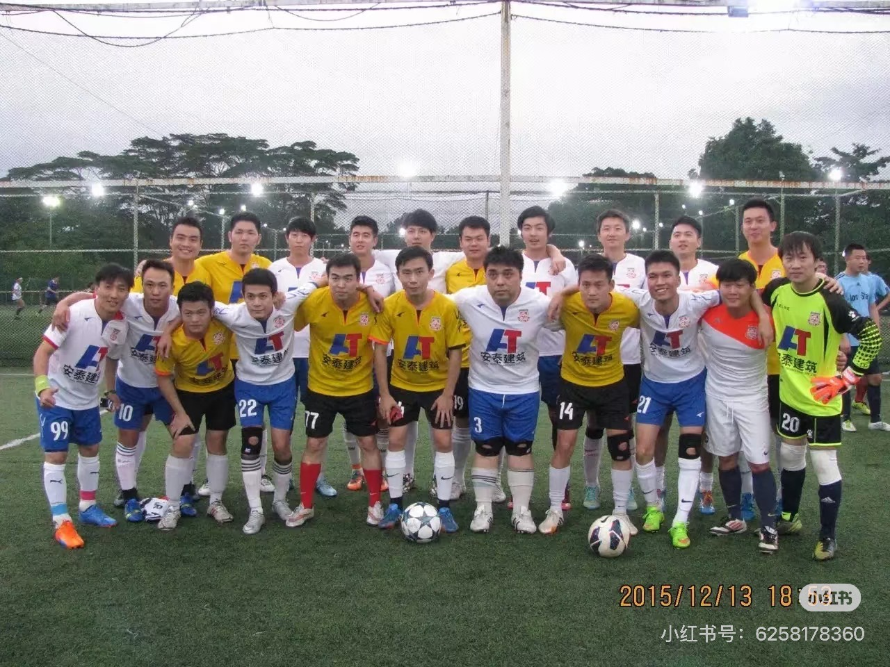
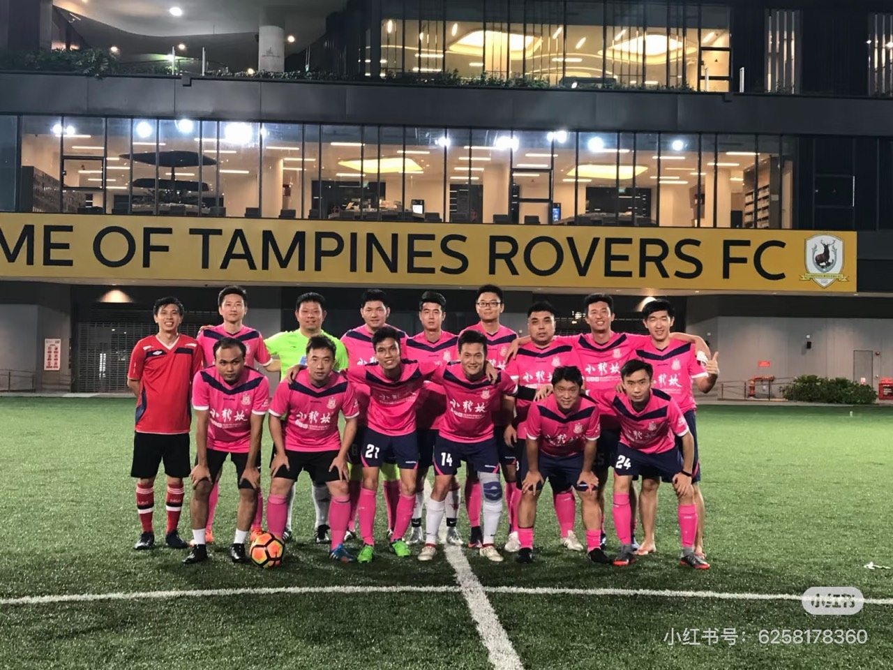
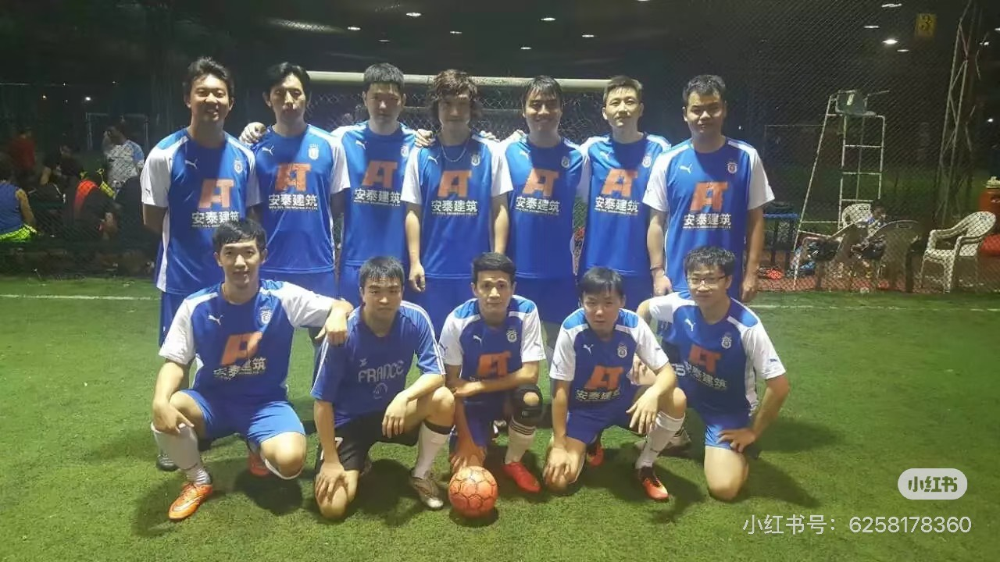
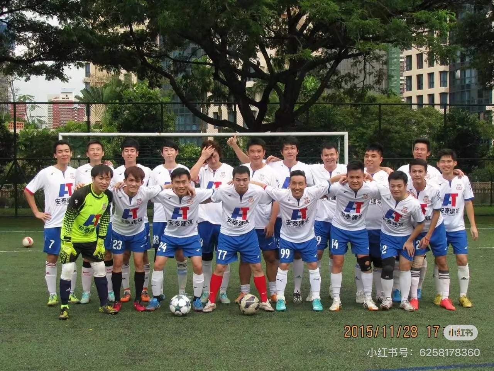
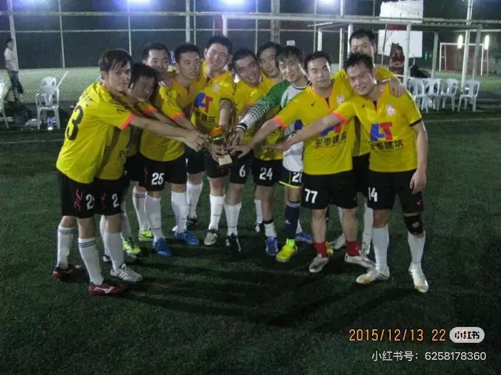
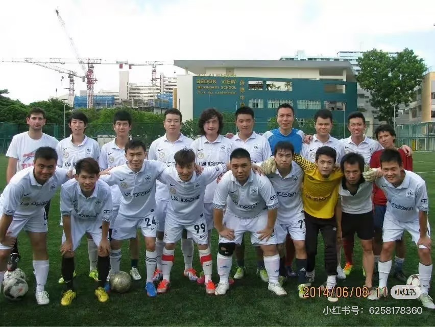
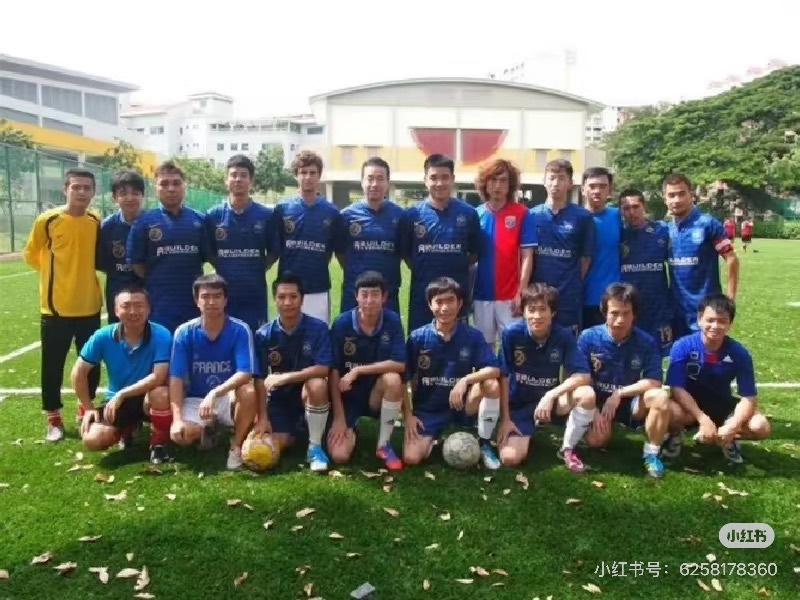
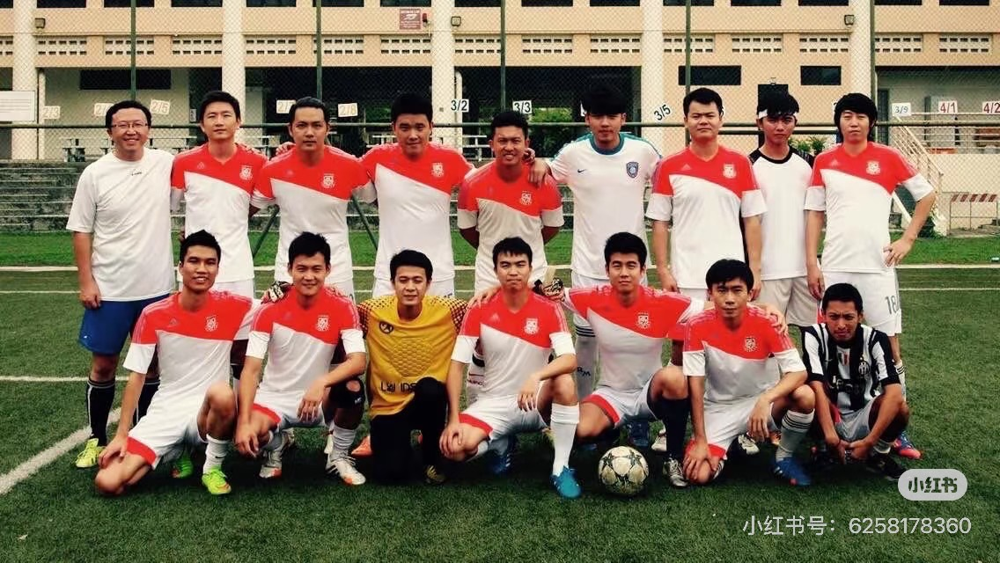
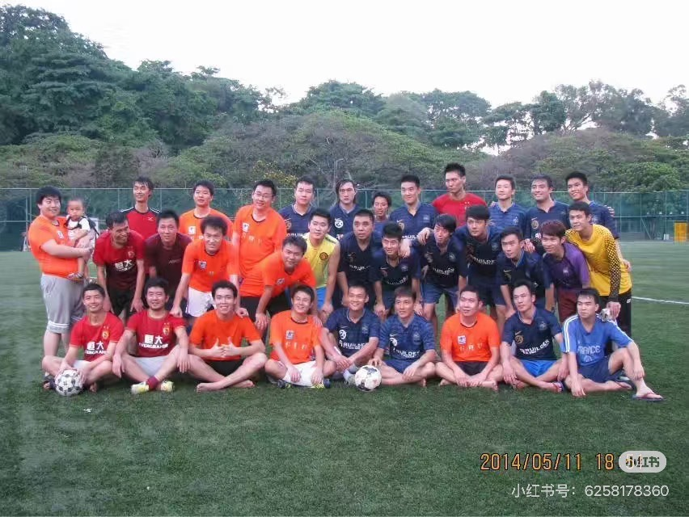